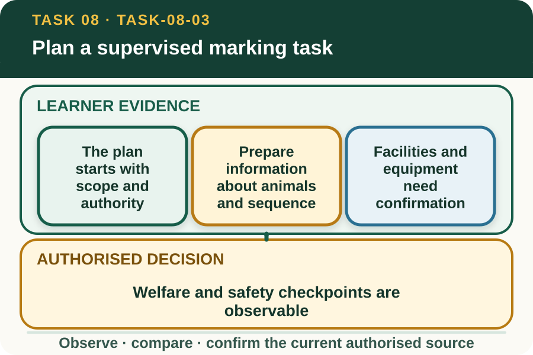

Classroom presentation · 8 slides
Plan a supervised marking task
Task 8 · 1 of 8
Plan a supervised marking task
Prepare roles, animals, facilities, equipment, welfare checks, records and stop conditions without teaching the technique.

Speaker notes
Teaching move (web-deck purpose): Use the module visual and the fictional worked example to move students from observation to a source-led decision. Ask students to name the evidence, the authority gap and the next safe communication step. Misconception and help: The plan clarifies sources, roles and checkpoints; it does not expose technique or assessor tools. Choose information needed before the supervised demonstration begins. Applied action: Run a desk-based readiness review. Audit a fictional marking plan against source, role, identity, facility, equipment and record cards. Flag every mismatch for the supervisor. Do not demonstrate or describe any practical livestock action. Boundary: This supplementary learning draws on mapped AHCLSK225 concepts. Current signed TAS and RTO documents control cohort delivery, assessment and competency decisions; current workplace procedures, supervision and authorised sources control real work. [Sources] - Source basis: AHCLSK225 Release 1 preparation, equipment, facility, WHS, identification, tally, welfare-monitoring and reporting requirements. Current local procedures, regulatory sources, approved materials, teacher demonstration and direct supervision control the practical technique. - Visual visual-task-08-03: Generated locally from accepted Stage 05 module headings; no external image copied. - Course visual manifest: work/pi/visuals/visual-manifest.json
Task 8 · 2 of 8
Map the learning
- The plan starts with scope and authority
- Prepare information about animals and sequence
- Facilities and equipment need confirmation
Retrieve: Which item belongs in a supervised marking work plan?
Speaker notes
Teaching move (learning map): Use the module visual and the fictional worked example to move students from observation to a source-led decision. Ask students to name the evidence, the authority gap and the next safe communication step. Misconception and help: The plan clarifies sources, roles and checkpoints; it does not expose technique or assessor tools. Choose information needed before the supervised demonstration begins. Applied action: Run a desk-based readiness review. Audit a fictional marking plan against source, role, identity, facility, equipment and record cards. Flag every mismatch for the supervisor. Do not demonstrate or describe any practical livestock action. Boundary: This supplementary learning draws on mapped AHCLSK225 concepts. Current signed TAS and RTO documents control cohort delivery, assessment and competency decisions; current workplace procedures, supervision and authorised sources control real work. [Sources] - Source basis: AHCLSK225 Release 1 preparation, equipment, facility, WHS, identification, tally, welfare-monitoring and reporting requirements. Current local procedures, regulatory sources, approved materials, teacher demonstration and direct supervision control the practical technique. - Visual visual-task-08-03: Generated locally from accepted Stage 05 module headings; no external image copied. - Course visual manifest: work/pi/visuals/visual-manifest.json
Task 8 · 3 of 8
Notice the evidence
The plan starts with scope and authority
A marking work plan identifies the authorised purpose, animals, current source, supervisor and limits of each participant's role. It also names the controlled practical demonstration that must occur before work.
The learner checks that the plan matches the actual task and does not infer an identification method from the module title. Species, legal system, device and enterprise requirements must be supplied by current sources.
Prepare information about animals and sequence
Planning fields can include group identity, number, source register, destination, order of work and record checkpoints. These fields allow the team to reconcile what was intended with what is later documented.
The actual drafting, movement, restraint and marking sequence requires current local instruction and direct supervision. The website does not show, describe, sequence or authorise any of those practical actions.
Speaker notes
Teaching move (theory idea 1): Use the module visual and the fictional worked example to move students from observation to a source-led decision. Ask students to name the evidence, the authority gap and the next safe communication step. Misconception and help: The plan clarifies sources, roles and checkpoints; it does not expose technique or assessor tools. Choose information needed before the supervised demonstration begins. Applied action: Run a desk-based readiness review. Audit a fictional marking plan against source, role, identity, facility, equipment and record cards. Flag every mismatch for the supervisor. Do not demonstrate or describe any practical livestock action. Boundary: This supplementary learning draws on mapped AHCLSK225 concepts. Current signed TAS and RTO documents control cohort delivery, assessment and competency decisions; current workplace procedures, supervision and authorised sources control real work. [Sources] - Source basis: AHCLSK225 Release 1 preparation, equipment, facility, WHS, identification, tally, welfare-monitoring and reporting requirements. Current local procedures, regulatory sources, approved materials, teacher demonstration and direct supervision control the practical technique. - Visual visual-task-08-03: Generated locally from accepted Stage 05 module headings; no external image copied. - Course visual manifest: work/pi/visuals/visual-manifest.json
Task 8 · 4 of 8
Use the source boundary
Facilities and equipment need confirmation
The plan should identify which approved site, facilities, equipment, materials and protective equipment the supervisor has selected. Learners can check presence, identity and documented condition within their role.
Any missing, faulty, unsafe or unverified item is reported before work. A learner should not substitute equipment, repair a fault or choose a different device from general knowledge.
Welfare and safety checkpoints are observable
A planning checkpoint names the evidence that causes a pause, such as unclear animal identity, facility fault, unexpected behaviour, missing role or conflicting source. The workplace defines the actual stop and response process.
Welfare planning also includes authorised post-operation observation and outcome reporting. It does not authorise a learner to diagnose, intervene, select equipment or independently respond to a concern.
Speaker notes
Teaching move (theory idea 2): Use the module visual and the fictional worked example to move students from observation to a source-led decision. Ask students to name the evidence, the authority gap and the next safe communication step. Misconception and help: The plan clarifies sources, roles and checkpoints; it does not expose technique or assessor tools. Choose information needed before the supervised demonstration begins. Applied action: Run a desk-based readiness review. Audit a fictional marking plan against source, role, identity, facility, equipment and record cards. Flag every mismatch for the supervisor. Do not demonstrate or describe any practical livestock action. Boundary: This supplementary learning draws on mapped AHCLSK225 concepts. Current signed TAS and RTO documents control cohort delivery, assessment and competency decisions; current workplace procedures, supervision and authorised sources control real work. [Sources] - Source basis: AHCLSK225 Release 1 preparation, equipment, facility, WHS, identification, tally, welfare-monitoring and reporting requirements. Current local procedures, regulatory sources, approved materials, teacher demonstration and direct supervision control the practical technique. - Visual visual-task-08-03: Generated locally from accepted Stage 05 module headings; no external image copied. - Course visual manifest: work/pi/visuals/visual-manifest.json
Task 8 · 5 of 8
Connect evidence to action
Records are part of task readiness
Before the practical begins, the team needs the correct register or enterprise record, identifiers, tally fields and correction process. Delaying record setup until after the task invites memory gaps and mismatched totals.
The learner should know who enters, verifies and closes each record. Completing a fictional planning table does not provide permission to access controlled enterprise systems.
Brief, read back and pause on gaps
A final read-back confirms purpose, roles, source revisions, animals, facilities, equipment identity, record points and stop conditions. Each participant acknowledges their role and asks about unresolved information.
This module prepares learners to understand a briefing. It neither teaches marking technique nor replaces supervised demonstration, practical work or the assessor's current evidence process.
Speaker notes
Teaching move (theory idea 3): Use the module visual and the fictional worked example to move students from observation to a source-led decision. Ask students to name the evidence, the authority gap and the next safe communication step. Misconception and help: The plan clarifies sources, roles and checkpoints; it does not expose technique or assessor tools. Choose information needed before the supervised demonstration begins. Applied action: Run a desk-based readiness review. Audit a fictional marking plan against source, role, identity, facility, equipment and record cards. Flag every mismatch for the supervisor. Do not demonstrate or describe any practical livestock action. Boundary: This supplementary learning draws on mapped AHCLSK225 concepts. Current signed TAS and RTO documents control cohort delivery, assessment and competency decisions; current workplace procedures, supervision and authorised sources control real work. [Sources] - Source basis: AHCLSK225 Release 1 preparation, equipment, facility, WHS, identification, tally, welfare-monitoring and reporting requirements. Current local procedures, regulatory sources, approved materials, teacher demonstration and direct supervision control the practical technique. - Visual visual-task-08-03: Generated locally from accepted Stage 05 module headings; no external image copied. - Course visual manifest: work/pi/visuals/visual-manifest.json
Task 8 · 6 of 8
Retrieve and check
Which item belongs in a supervised marking work plan?
- Current source revisions, defined roles, record checkpoints and observable stop conditions.
- An improvised device choice made by the learner.
- A copied assessor observation checklist with expected answers.
Teacher reveal
Correct. These fields support readiness and accountability without teaching technique.
Choose information needed before the supervised demonstration begins.
Speaker notes
Teaching move (retrieval): Use the module visual and the fictional worked example to move students from observation to a source-led decision. Ask students to name the evidence, the authority gap and the next safe communication step. Misconception and help: The plan clarifies sources, roles and checkpoints; it does not expose technique or assessor tools. Choose information needed before the supervised demonstration begins. Applied action: Run a desk-based readiness review. Audit a fictional marking plan against source, role, identity, facility, equipment and record cards. Flag every mismatch for the supervisor. Do not demonstrate or describe any practical livestock action. Boundary: This supplementary learning draws on mapped AHCLSK225 concepts. Current signed TAS and RTO documents control cohort delivery, assessment and competency decisions; current workplace procedures, supervision and authorised sources control real work. [Sources] - Source basis: AHCLSK225 Release 1 preparation, equipment, facility, WHS, identification, tally, welfare-monitoring and reporting requirements. Current local procedures, regulatory sources, approved materials, teacher demonstration and direct supervision control the practical technique. - Visual visual-task-08-03: Generated locally from accepted Stage 05 module headings; no external image copied. - Course visual manifest: work/pi/visuals/visual-manifest.json Use option-specific feedback after the learner commits to an answer.
Task 8 · 7 of 8
Construct a source-led response
Prepare a fictional marking-task readiness brief covering sources, roles, animals, facilities, equipment identity, records and stop conditions without describing the practical technique.
- The authorised purpose and source revisions are…
- The identified group and record are…
- The supervisor and learner roles are…
- The approved facility and equipment identity checks are…
- The task pauses if…
- The practical demonstration and final approval come from…
Success criteria
- Covers all major work-plan fields
- Checks source, group and equipment identity
- Includes observable stop conditions and clear authority
- Contains no movement, restraint, application or preventative-treatment technique
Speaker notes
Teaching move (guided written response): Use the module visual and the fictional worked example to move students from observation to a source-led decision. Ask students to name the evidence, the authority gap and the next safe communication step. Misconception and help: The plan clarifies sources, roles and checkpoints; it does not expose technique or assessor tools. Choose information needed before the supervised demonstration begins. Applied action: Run a desk-based readiness review. Audit a fictional marking plan against source, role, identity, facility, equipment and record cards. Flag every mismatch for the supervisor. Do not demonstrate or describe any practical livestock action. Boundary: This supplementary learning draws on mapped AHCLSK225 concepts. Current signed TAS and RTO documents control cohort delivery, assessment and competency decisions; current workplace procedures, supervision and authorised sources control real work. [Sources] - Source basis: AHCLSK225 Release 1 preparation, equipment, facility, WHS, identification, tally, welfare-monitoring and reporting requirements. Current local procedures, regulatory sources, approved materials, teacher demonstration and direct supervision control the practical technique. - Visual visual-task-08-03: Generated locally from accepted Stage 05 module headings; no external image copied. - Course visual manifest: work/pi/visuals/visual-manifest.json
Task 8 · 8 of 8
Close the loop
Run a desk-based readiness review
Audit a fictional marking plan against source, role, identity, facility, equipment and record cards. Flag every mismatch for the supervisor. Do not demonstrate or describe any practical livestock action.
- Name the strongest evidence in the scenario.
- Explain the decision or referral it supports.
- State which current source or authorised person controls real work.
Boundary: This supplementary learning draws on mapped AHCLSK225 concepts. Current signed TAS and RTO documents control cohort delivery, assessment and competency decisions; current workplace procedures, supervision and authorised sources control real work.
Speaker notes
Teaching move (exit and application): Use the module visual and the fictional worked example to move students from observation to a source-led decision. Ask students to name the evidence, the authority gap and the next safe communication step. Misconception and help: The plan clarifies sources, roles and checkpoints; it does not expose technique or assessor tools. Choose information needed before the supervised demonstration begins. Applied action: Run a desk-based readiness review. Audit a fictional marking plan against source, role, identity, facility, equipment and record cards. Flag every mismatch for the supervisor. Do not demonstrate or describe any practical livestock action. Boundary: This supplementary learning draws on mapped AHCLSK225 concepts. Current signed TAS and RTO documents control cohort delivery, assessment and competency decisions; current workplace procedures, supervision and authorised sources control real work. [Sources] - Source basis: AHCLSK225 Release 1 preparation, equipment, facility, WHS, identification, tally, welfare-monitoring and reporting requirements. Current local procedures, regulatory sources, approved materials, teacher demonstration and direct supervision control the practical technique. - Visual visual-task-08-03: Generated locally from accepted Stage 05 module headings; no external image copied. - Course visual manifest: work/pi/visuals/visual-manifest.json